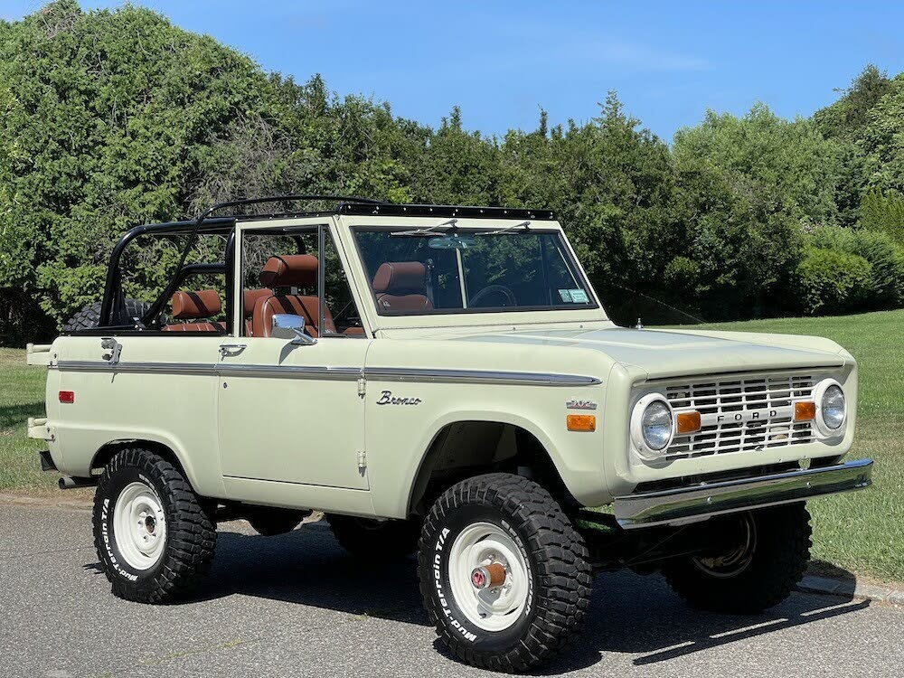
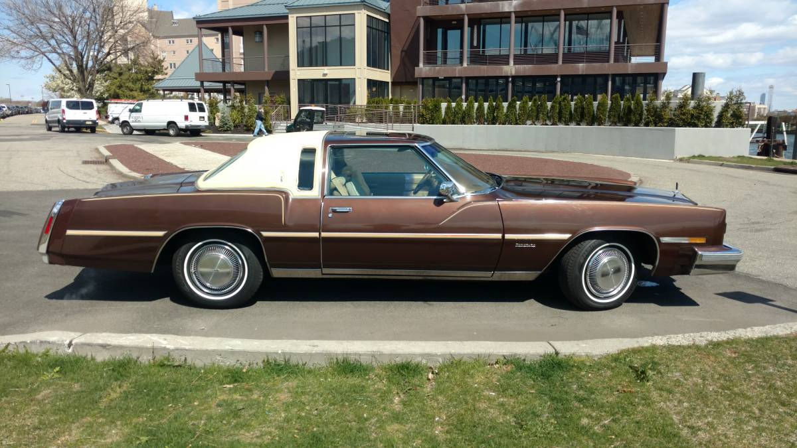

Classic Cars 1970s
Inicio
Coches
60s
70s
80s
90s
Ford Bronco
Valorado en 85.000€

Plymouth road runner
Valorado en 25.000€
Oldsmobile Tornado XSR Coupe
Valorado en 10.000€

Lincoln Continental Mark IV
Valorado en 18.000€